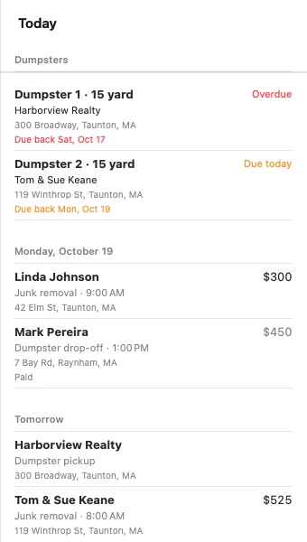
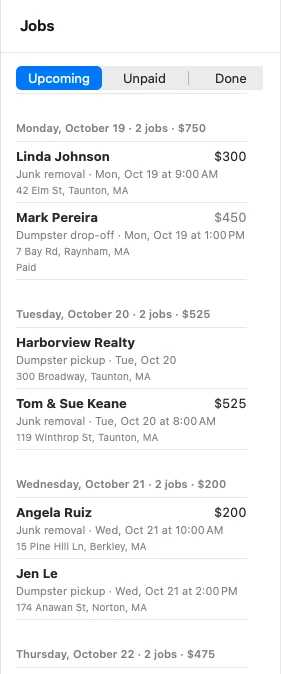
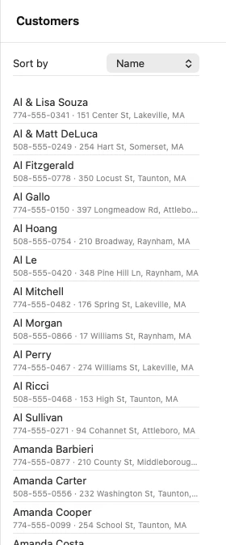

Preview · October 2026
Ace Junk Removal App
One app for the phones and the office: customers, jobs, the six dumpsters, and a voice assistant.
Preview · October 2026
One app for the phones and the office: customers, jobs, the six dumpsters, and a voice assistant.

Swipe to go through it, or use the arrows below.Use the arrows below or the arrow keys on the keyboard.
On the iPhone
The day at a glance.
On the iPhone
Upcoming, Unpaid and Done.

The Assistant

On the Mac
The same day at a glance, with the details alongside.

Tap the picture to see it larger.
Closer look: Today's list

On the Mac
Grouped by day with totals. Unpaid and Done sit in the sidebar, like mailboxes in Mail.

Tap the picture to see it larger.
Closer look: the jobs list

On the Mac
Hundreds of customers, sorted by name, last job or total spent. Search by name, phone or address. Right-click for quick actions.

Tap the picture to see it larger.
Closer look: the customer list
